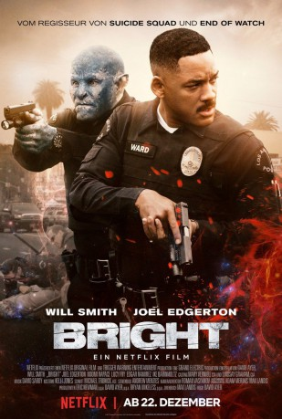

#7839 Bright
 gesehen am 02.01.2018
gesehen am 02.01.2018
 
 IMDB-Wertung: 6.4 / 10
IMDB-Wertung: 6.4 / 10  Tomatometer: 26
Tomatometer: 26  Metascore: 29
Metascore: 29 
„Bright“ spielt in einer alternativen Realität der Gegenwart, in der Menschen, Orks, Elfen und Feen bereits seit Anbeginn der Zeit Seite an Seite leben. Der Actionfilm sprengt die Grenzen seines Genres und handelt von zwei Polizisten sehr unterschiedlicher Herkunft: Ward (Will Smith) und Jakoby (Joel Edgerton) machen bei einer Routinepatrouille eines nachts eine düstere Entdeckung, die die Zukunft und die Welt, die sie kennen, für immer verändern wird. Quelle: Netflix
Jahr: 2017
Dauer: 117 Minuten
FSK:
Land: USA Studio: NetflixTonspuren: DD5.1 - , DD5.1 - ,
Untertitel: Deutsch, Englisch, , Französisch, , , ,
Auflösung: 1080p (1920x1080) Größe: 3911 MB
Genre: Action, Thriller, Sci-Fi, Fantasy, Krimi
Regisseur: David Ayer
Drehbuch: Max Landis
Soundtrack: David Sardy
Darsteller:
 Will Smith als Daryl Ward
Will Smith als Daryl Ward Joel Edgerton als Nick Jakoby
Joel Edgerton als Nick Jakoby Noomi Rapace als Leilah
Noomi Rapace als Leilah Edgar Ramírez als Kandomere
Edgar Ramírez als Kandomere- Lucy Fry als Tikka
 Veronica Ngo als Tien
Veronica Ngo als Tien Alex Meraz als Serafin
Alex Meraz als Serafin Happy Anderson als Montehugh
Happy Anderson als Montehugh Ike Barinholtz als Pollard
Ike Barinholtz als Pollard Dawn Olivieri als Sherri Ward
Dawn Olivieri als Sherri Ward Matt Gerald als Hicks
Matt Gerald als Hicks Margaret Cho als Sergeant Ching
Margaret Cho als Sergeant Ching- Joseph Piccuirro als Brown
 Brad William Henke als Dorghu
Brad William Henke als Dorghu Jay Hernandez als Rodriguez
Jay Hernandez als Rodriguez Enrique Murciano als Poison
Enrique Murciano als Poison- Scarlet Spencer als Sophia Ward
- Andrea Navedo als Captain Perez
 Kenneth Choi als Yamahara
Kenneth Choi als Yamahara- Bobby Naderi als Arkashian
- Carlos Linares als Old Man
- Bunnie Rivera als Old Woman
- Rosemary Stevens als Sherri's Mom / Orc Woman #4
- Greg Joung Paik als Gas Station Clerk
- Robert Jekabson als Morton
- Nadia Gray als Larika
 Chris Browning als Serling
Chris Browning als Serling- Laura Vallejo als Ortiz
- Brandon Larracuente als Mike (Dorghu's Son)
- Derek Graf als Smiley
 Jamal Duff als Junior
Jamal Duff als Junior- Craig Henningsen als Sharps
- Aaron V. Williamson als Orc 'GQ'
- Joe Rogan als Joe Rogan
 Tim Sitarz als Non-Stop
Tim Sitarz als Non-Stop Luis Moncada als Casper
Luis Moncada als Casper- Jos Viramontes als Mayor Mike Contreras
- Aileen Burdock als Orc Housewife
- Briana Henry als Orc Hottie at Party
- Lesley Shires als Orc Woman #3
- René Mena als Latino Father
- Chelsea Rendon als Angie
- Natalie Camunas als Vice Hall Vendor
 Kevin Vance als MTF Agent Gordon
Kevin Vance als MTF Agent Gordon- Candice M Arnwine als Street Vendor (uncredited)
- Gabriel Baca als Vendor (uncredited)
- Alex Boling als Homeless Man (uncredited)
- Bertrand-Xavier Corbi als Orc Church Clan Member (uncredited)
- Mitch Craft als Gangster Orc (uncredited)
- Juanita DeSilva als Guadalupe-vendor (uncredited)
Datei: X:\2017(A-F)\Bright (2017, FSK, 1920x1080).mkv seit 25.12.2017
Festplatte: HD 2017(A-Z)-2018(A-F)
 Es gibt insgesamt 152 Filme in der Gruppe '2017(A-F)'
Es gibt insgesamt 152 Filme in der Gruppe '2017(A-F)'